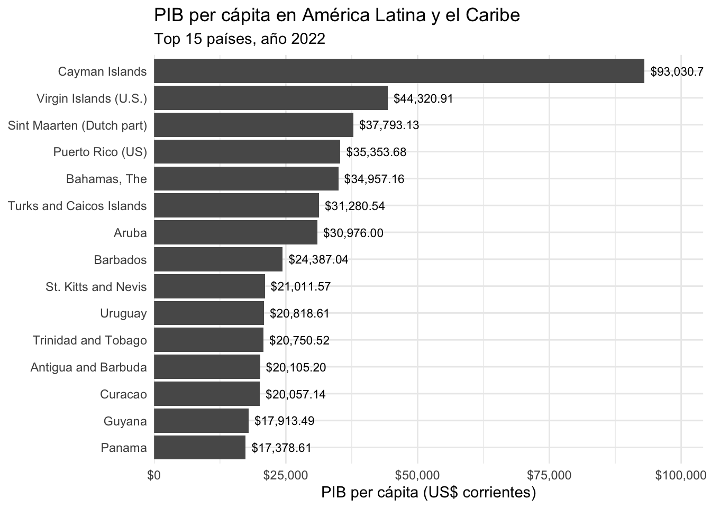
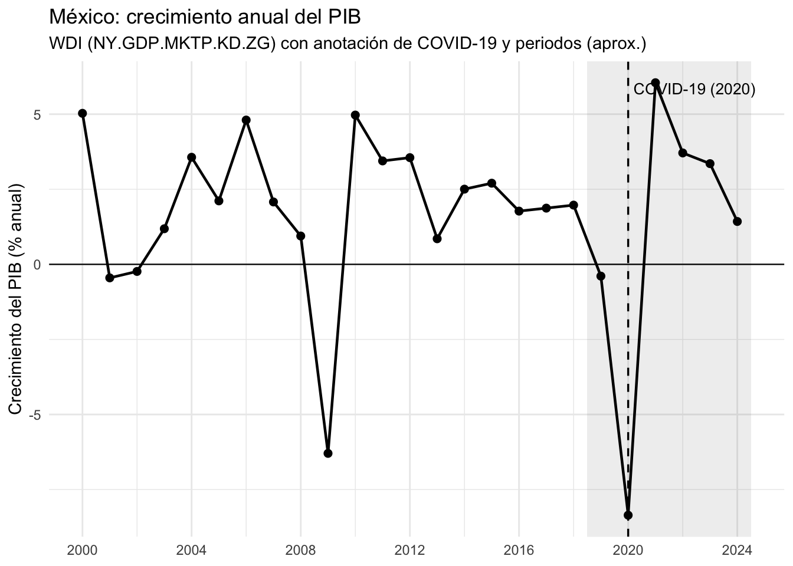
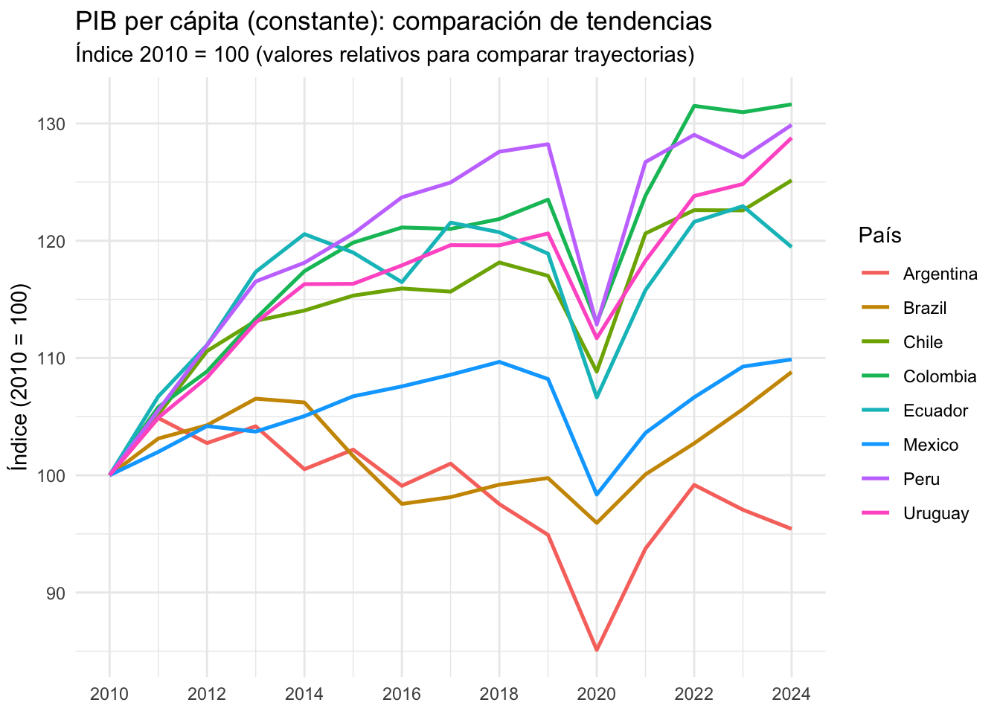
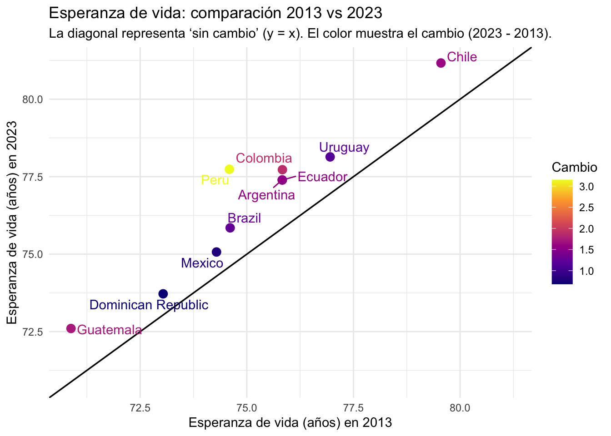
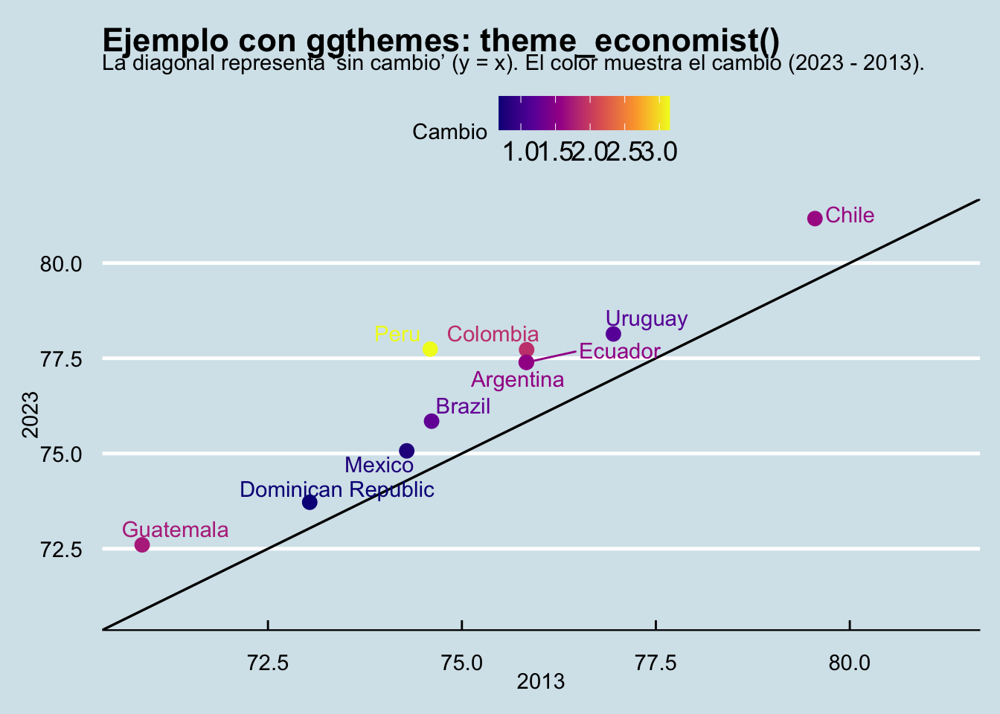
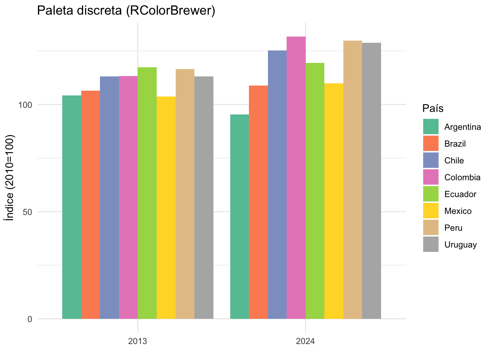
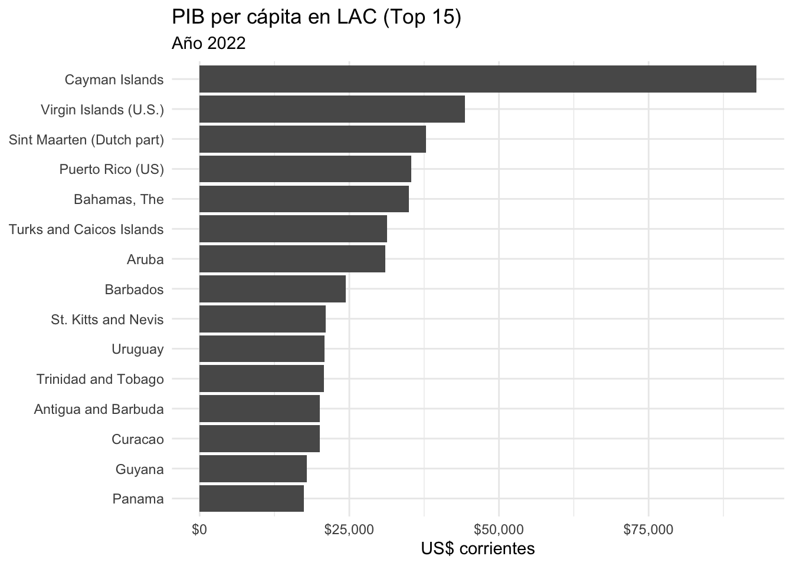

if (!require("pacman")) install.packages("pacman")Cargando paquete requerido: pacmanpacman::p_load(
tidyverse,
WDI,
scales,
ggthemes,
RColorBrewer,
viridis,
ggrepel,
plotly
)En esta práctica aprenderás a:
if (!require("pacman")) install.packages("pacman")Cargando paquete requerido: pacmanpacman::p_load(
tidyverse,
WDI,
scales,
ggthemes,
RColorBrewer,
viridis,
ggrepel,
plotly
)El paquete {WDI} trae un directorio interno con metadatos de países (incluye región). Aquí filtramos los países de Latin America & Caribbean y excluimos agregados.
lac <- WDI_data$country %>%
as_tibble() %>%
filter(region == "Latin America & Caribbean") %>%
filter(iso2c != "") %>%
filter(!region %in% c("Aggregates")) %>%
distinct(iso2c, country)
lac %>%
slice_sample(n = 10) # aleatorio# A tibble: 10 × 2
iso2c country
<chr> <chr>
1 PY Paraguay
2 VE Venezuela, RB
3 BB Barbados
4 LC St. Lucia
5 KN St. Kitts and Nevis
6 GT Guatemala
7 KY Cayman Islands
8 BR Brazil
9 VC St. Vincent and the Grenadines
10 BO Bolivia Elegimos 5 indicadores típicos de análisis social y económico. (Si en algún país falta un indicador, aparecerá como NA.)
anio_ref <- 2022
indicadores_5 <- c(
pob_total = "SP.POP.TOTL", # población total
pib_pc = "NY.GDP.PCAP.CD", # PIB per cápita (US$ corrientes)
esperanza = "SP.DYN.LE00.IN", # esperanza de vida (años)
mort_inf = "SP.DYN.IMRT.IN", # mortalidad infantil (por 1000 nacidos vivos)
educ_gdp = "SE.XPD.TOTL.GD.ZS" # gasto público en educación (% del PIB)
)wdi_5_2022 <- WDI(
country = lac$iso2c,
indicator = indicadores_5,
start = anio_ref, end = anio_ref
) %>%
as_tibble() %>%
select(iso2c, country, year, everything())
wdi_5_2022 %>% slice_sample(n = 10)# A tibble: 10 × 9
iso2c country year iso3c pob_total pib_pc esperanza mort_inf educ_gdp
<chr> <chr> <int> <chr> <dbl> <dbl> <dbl> <dbl> <dbl>
1 AW Aruba 2022 ABW 107310 30976. 76.2 NA NA
2 JM Jamaica 2022 JAM 2839144 6626. 71.5 18.3 5.35
3 EC Ecuador 2022 ECU 17823897 6516. 76.6 11.2 3.60
4 SV El Salvador 2022 SLV 6280319 5075. 72.0 9.5 3.26
5 NI Nicaragua 2022 NIC 6730654 2323. 74.5 10.7 3.80
6 PA Panama 2022 PAN 4400773 17379. 79.3 11.1 3.38
7 LC St. Lucia 2022 LCA 178781 13104. 72.7 14.4 4.64
8 HN Honduras 2022 HND 10463872 3003. 72.7 13.7 4.48
9 CU Cuba 2022 CUB 11059820 NA 77.6 6.3 8.44
10 DO Dominican Rep… 2022 DOM 11230734 10104. 74.2 29.1 3.61La idea aquí es practicar lo mínimo indispensable:
Ejemplo: PIB per cápita en LAC (año 2022) para los 15 países con mayor PIB per cápita.
top15_pibpc <- wdi_5_2022 %>%
select(country, year, pib_pc) %>%
filter(!is.na(pib_pc)) %>%
slice_max(pib_pc, n = 15)
top15_pibpc# A tibble: 15 × 3
country year pib_pc
<chr> <int> <dbl>
1 Cayman Islands 2022 93031.
2 Virgin Islands (U.S.) 2022 44321.
3 Sint Maarten (Dutch part) 2022 37793.
4 Puerto Rico (US) 2022 35354.
5 Bahamas, The 2022 34957.
6 Turks and Caicos Islands 2022 31281.
7 Aruba 2022 30976.
8 Barbados 2022 24387.
9 St. Kitts and Nevis 2022 21012.
10 Uruguay 2022 20819.
11 Trinidad and Tobago 2022 20751.
12 Antigua and Barbuda 2022 20105.
13 Curacao 2022 20057.
14 Guyana 2022 17913.
15 Panama 2022 17379.top15_pibpc %>%
mutate(country = fct_reorder(country, pib_pc)) %>%
ggplot(aes(x = country, y = pib_pc)) +
geom_col() +
coord_flip() +
scale_y_continuous(labels = scales::dollar) +
labs(
title = "PIB per cápita en América Latina y el Caribe",
subtitle = paste0("Top 15 países, año ", anio_ref),
x = NULL,
y = "PIB per cápita (US$ corrientes)"
) +
theme_minimal()Un poco más avanzado:
top15_pibpc %>%
mutate(country = fct_reorder(country, pib_pc)) %>%
ggplot(aes(x = country, y = pib_pc)) +
geom_col() +
geom_text(
aes(label = scales::dollar(pib_pc)),
hjust = -0.1,
size = 3
) +
coord_flip() +
scale_y_continuous(labels = scales::dollar,
expand = expansion(mult = c(0, 0.12))) +
labs(
title = "PIB per cápita en América Latina y el Caribe",
subtitle = paste0("Top 15 países, año ", anio_ref),
x = NULL,
y = "PIB per cápita (US$ corrientes)"
) +
theme_minimal()
Para series de tiempo, lo más claro suele ser:
Indicador de WDI: crecimiento anual del PIB (variación % anual).
mex_gdp_growth <- WDI(
country = "MX",
indicator = c(gdp_growth = "NY.GDP.MKTP.KD.ZG"),
start = 2000, end = 2024
) %>%
as_tibble() %>%
select(country, iso2c, year, gdp_growth) %>%
arrange(year)
mex_gdp_growth %>% slice_head(n = 10)# A tibble: 10 × 4
country iso2c year gdp_growth
<chr> <chr> <int> <dbl>
1 Mexico MX 2000 5.03
2 Mexico MX 2001 -0.451
3 Mexico MX 2002 -0.237
4 Mexico MX 2003 1.19
5 Mexico MX 2004 3.57
6 Mexico MX 2005 2.11
7 Mexico MX 2006 4.81
8 Mexico MX 2007 2.08
9 Mexico MX 2008 0.943
10 Mexico MX 2009 -6.30 periodos <- tibble(
inicio = c(2019, 2025),
fin = c(2024, 2024),
etiqueta = c("Periodo AMLO (años completos)", "Periodo Sheinbaum (años completos)")
) %>%
mutate(fin = pmin(fin, max(mex_gdp_growth$year)))
mex_gdp_growth %>%
ggplot(aes(x = year, y = gdp_growth)) +
geom_rect(
data = periodos,
aes(xmin = inicio - 0.5, xmax = fin + 0.5, ymin = -Inf, ymax = Inf),
inherit.aes = FALSE,
alpha = 0.10
) +
geom_hline(yintercept = 0, linewidth = 0.4) +
geom_line(linewidth = 0.8) +
geom_point(size = 2) +
geom_vline(xintercept = 2020, linetype = "dashed", linewidth = 0.6) +
annotate("text",
x = 2020.2,
y = max(mex_gdp_growth$gdp_growth, na.rm = TRUE),
label = "COVID-19 (2020)",
hjust = 0, vjust = 1, size = 3.5) +
scale_x_continuous(breaks = seq(2000, 2024, 4)) +
labs(
title = "México: crecimiento anual del PIB",
subtitle = "WDI (NY.GDP.MKTP.KD.ZG) con anotación de COVID-19 y periodos (aprox.)",
x = NULL,
y = "Crecimiento del PIB (% anual)"
) +
theme_minimal()
Comparar países en valores absolutos puede ser engañoso si difieren en tamaño. Para comparar trayectorias es mejor usar:
paises_comp <- c("MEX", "BRA", "ARG", "CHL", "COL", "PER", "ECU", "URY")
pibpc_ts <- WDI(
country = paises_comp,
indicator = c(pibpc_const = "NY.GDP.PCAP.KD"),
start = 2010, end = 2024
) %>%
as_tibble() %>%
select(country, iso2c, year, pibpc_const) %>%
arrange(country, year)pibpc_indice <- pibpc_ts %>%
group_by(country) %>%
mutate(base_2010 = pibpc_const[year == 2010][1]) %>%
ungroup() %>%
mutate(indice_2010 = 100 * pibpc_const / base_2010)
pibpc_indice %>% slice_head(n = 10)# A tibble: 10 × 6
country iso2c year pibpc_const base_2010 indice_2010
<chr> <chr> <int> <dbl> <dbl> <dbl>
1 Argentina AR 2010 13387. 13387. 100
2 Argentina AR 2011 14041. 13387. 105.
3 Argentina AR 2012 13754. 13387. 103.
4 Argentina AR 2013 13946. 13387. 104.
5 Argentina AR 2014 13456. 13387. 101.
6 Argentina AR 2015 13680. 13387. 102.
7 Argentina AR 2016 13266. 13387. 99.1
8 Argentina AR 2017 13520. 13387. 101.
9 Argentina AR 2018 13058. 13387. 97.5
10 Argentina AR 2019 12706. 13387. 94.9pibpc_indice %>%
ggplot(aes(x = year, y = indice_2010, color = country)) +
geom_line(linewidth = 0.9) +
scale_x_continuous(breaks = seq(2010, 2024, 2)) +
labs(
title = "PIB per cápita (constante): comparación de tendencias",
subtitle = "Índice 2010 = 100 (valores relativos para comparar trayectorias)",
x = NULL,
y = "Índice (2010 = 100)",
color = "País"
) +
theme_minimal()
La idea es comparar un indicador en dos momentos:
Arriba de la diagonal implica aumento; debajo implica disminución.
##Ejemplo: esperanza de vida (2013 vs 2023) en 10 países
paises_10 <- c("MEX", "BRA", "ARG", "CHL", "COL", "PER", "ECU", "URY", "GTM", "DOM")
ev_2013_2023 <- WDI(
country = paises_10,
indicator = c(ev = "SP.DYN.LE00.IN"),
start = 2013, end = 2023
) %>%
as_tibble() %>%
select(country, iso2c, year, ev) %>%
filter(year %in% c(2013, 2023)) %>%
pivot_wider(names_from = year,
values_from = ev) %>%
rename(ev_2013 = `2013`, ev_2023 = `2023`) %>%
mutate(cambio = ev_2023 - ev_2013)
ev_2013_2023# A tibble: 10 × 5
country iso2c ev_2023 ev_2013 cambio
<chr> <chr> <dbl> <dbl> <dbl>
1 Argentina AR 77.4 75.8 1.57
2 Brazil BR 75.8 74.6 1.24
3 Chile CL 81.2 79.6 1.62
4 Colombia CO 77.7 75.8 1.89
5 Dominican Republic DO 73.7 73.0 0.682
6 Ecuador EC 77.4 75.8 1.56
7 Guatemala GT 72.6 70.9 1.72
8 Mexico MX 75.1 74.3 0.780
9 Peru PE 77.7 74.6 3.15
10 Uruguay UY 78.1 77.0 1.19 lims <- range(c(ev_2013_2023$ev_2013, ev_2013_2023$ev_2023), na.rm = TRUE)
ev_2013_2023 %>%
ggplot(aes(x = ev_2013, y = ev_2023, label = country, color = cambio)) +
geom_abline(slope = 1, intercept = 0, linewidth = 0.6) +
geom_point(size = 3) +
ggrepel::geom_text_repel(show.legend = FALSE, max.overlaps = 20) +
scale_x_continuous(limits = lims) +
scale_y_continuous(limits = lims) +
scale_color_viridis_c(option = "C") +
labs(
title = "Esperanza de vida: comparación 2013 vs 2023",
subtitle = "La diagonal representa ‘sin cambio’ (y = x). El color muestra el cambio (2023 - 2013).",
x = "Esperanza de vida (años) en 2013",
y = "Esperanza de vida (años) en 2023",
color = "Cambio"
) +
theme_minimal() -> g_ev
g_ev
g_ev +
labs(
title = "Ejemplo con ggthemes: theme_economist()",
x = "2013",
y = "2023"
) +
ggthemes::theme_economist()
pibpc_indice %>%
filter(year %in% c(2013, 2024)) %>%
ggplot(aes(x = factor(year), y = indice_2010, fill = country)) +
geom_col(position = "dodge") +
scale_fill_brewer(palette = "Set2") +
labs(
title = "Paleta discreta (RColorBrewer)",
x = NULL,
y = "Índice (2010=100)",
fill = "País"
) +
theme_minimal()
ev_2013_2023 %>%
ggplot(aes(x = ev_2013, y = ev_2023, color = cambio)) +
geom_point(size = 3) +
scale_color_viridis_c(option = "D") +
labs(
title = "Paleta continua (viridis)",
x = "2013",
y = "2023",
color = "Cambio"
) +
theme_minimal()
g1 <- top15_pibpc %>%
mutate(country = fct_reorder(country, pib_pc)) %>%
ggplot(aes(x = country, y = pib_pc)) +
geom_col() +
coord_flip() +
scale_y_continuous(labels = scales::dollar) +
labs(
title = "PIB per cápita en LAC (Top 15)",
subtitle = paste0("Año ", anio_ref),
x = NULL,
y = "US$ corrientes"
) +
theme_minimal()
g1
ggsave("fig_pibpc_top15.png",
plot = g1,
width = 9, height = 5,
dpi = 300)
ggsave("fig_pibpc_top15.pdf",
plot = g1,
width = 9,
height = 5)interactivo<- ggplotly(g1)
interactivoggsave().